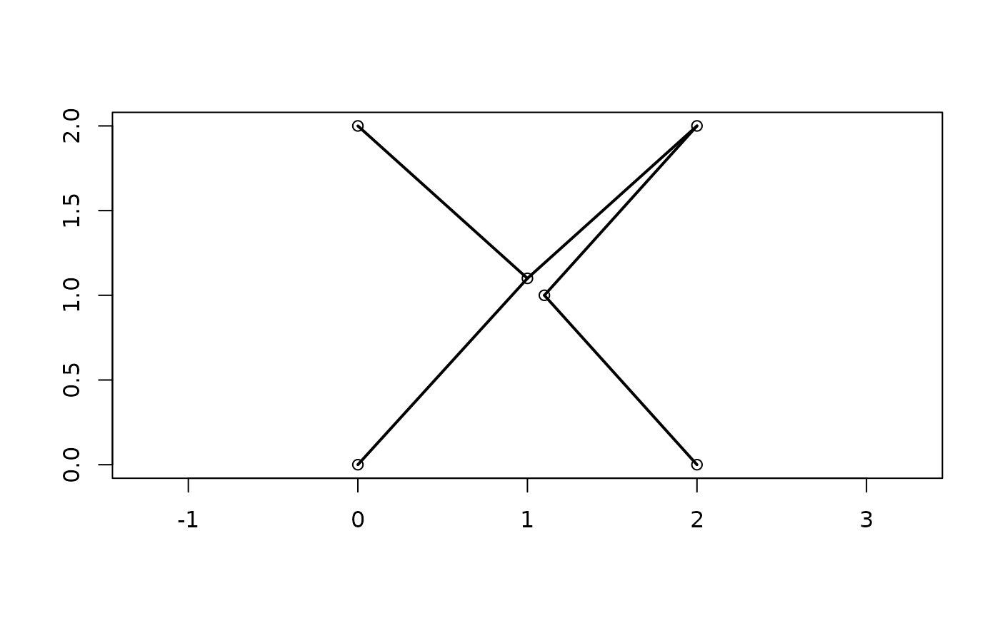

Calculate or plot the minimum spanning tree (Gower and Ross 1969) of a distance matrix.
Arguments
- distances
Either a matrix that can be interpreted as a distance matrix, or an object of class
dist.- plot
Logical specifying whether to add the minimum spanning tree to an existing plot.
- x, y
Numeric vectors specifying the X and Y coordinates of each element in
distances. Necessary only ifplot = TRUE.- ...
Additional parameters to send to
[lines()].- mst
Optional parameter specifying the minimum spanning tree in the format returned by
MSTEdges(); ifNULL, calculated fromdistances.
Value
MSTEdges() returns a matrix in which each row corresponds to an
edge of the minimum spanning tree, listed in non-decreasing order of length.
The two columns contain the indices of the entries in distances that
each edge connects, with the lower value listed first.
MSTLength() returns the length of the minimum spanning tree.
References
Gower JC, Ross GJS (1969). “Minimum spanning trees and single linkage cluster analysis.” Journal of the Royal Statistical Society. Series C (Applied Statistics), 18(1), 54–64. doi:10.2307/2346439 .
See also
Slow implementation returning the association matrix of the minimum spanning
tree: ape::mst().
Other utility functions:
ClusterTable,
ClusterTable-methods,
Hamming(),
SampleOne(),
TipTimedTree(),
UnshiftTree(),
as.multiPhylo(),
match,phylo,phylo-method,
sapply64(),
sort.multiPhylo()
Examples
# Corners of an almost-regular octahedron
points <- matrix(c(0, 0, 2, 2, 1.1, 1,
0, 2, 0, 2, 1, 1.1,
0, 0, 0, 0, 1, -1), 6)
distances <- dist(points)
mst <- MSTEdges(distances)
MSTLength(distances, mst)
#> [1] 8.496869
plot(points[, 1:2], ann = FALSE, asp = 1)
MSTEdges(distances, TRUE, x = points[, 1], y = points[, 2], lwd = 2)
